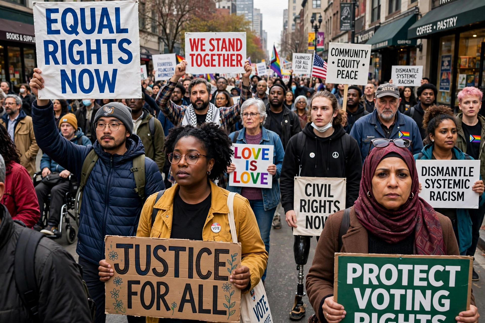

Anti-racism encompasses a range of ideas and political actions that oppose racism and the oppression of marginalized racial groups. Anti-racism is generally structured around conscious efforts and deliberate actions intended to provide equal opportunities for all people on an individual and systemic level, often including challenges to racist policies, institutions, attitudes, and behaviours.
Opposition to racism has roots in abolitionism and resistance to slavery and colonialism. In the 20th century, anti-racist movements included the American civil rights movement, resistance to apartheid in South Africa, and anti-colonial liberation movements. European anti-racist organizations formed in response to fascism and later to discrimination against post-war migrants. The United Nations adopted the International Convention on the Elimination of All Forms of Racial Discrimination in 1965.
Anti-racist work takes many forms: legislation and litigation against discrimination; education and diversity training in schools and workplaces; protest movements; and scholarship examining how race and racism operate through laws and institutions. Some theorists distinguish anti-racism from mere "non-racism", arguing that actively opposing racist structures, rather than simply avoiding personal prejudice, is required. The term gained wide currency in public debate in the late 2010s and 2020s, including discussion of its role in education, publishing, and corporate policy, and has also attracted criticism and political controversy in several countries.